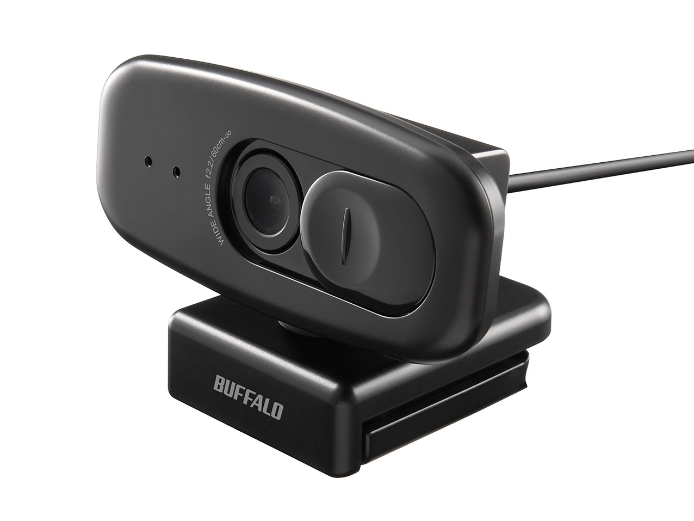
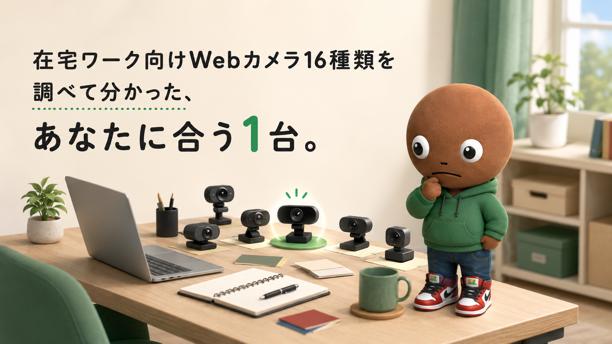
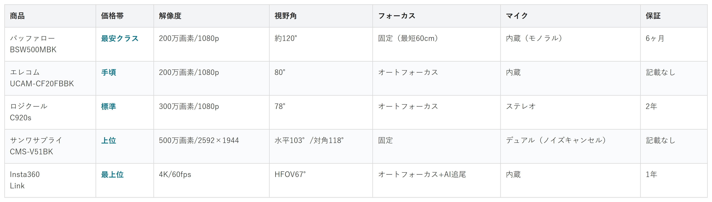

Amazonで見るビデオ通話でノートPC内蔵カメラの画質に違和感がある人へ
その映り、
自分だと思う？
Webカメラ19候補を調査。価格・解像度・視野角・フォーカス方式から、選び方の違う5商品を比較しました。
自分に合うカメラを探す
この記事はAmazonアソシエイト・プログラムの参加者として、紹介料を得る場合があります（PR）。仕様は調査時点の情報です。
19候補から、選び方の違う5商品に絞りました。まずは気になる1台へ。向いている人・向いていない人と、低評価レビューもまとめています。
19候補を調査
5商品に厳選
低評価レビューも確認済み
結論から先に言うと：
あなたの使い方に合う、1台を。
横にスワイプして、5商品を見比べる
選び方の基準は3つ
調べてわかったのは、基準はシンプルだという点です。
1つ目は「フォーカス方式」。固定かオートかで、映る顔の鮮明さが変わります。
2つ目は「視野角」。1人用か複数人での会議用かで選び方が変わります。
3つ目は「マイクの質」。内蔵マイクだけで話すなら、ノイズ処理の有無が効いてきます。
比較表

価格帯・解像度・視野角・フォーカス・マイク・保証の比較（価格帯は最安クラス〜最上位の5段階）
バッファロー BSW500MBK
- 最安クラス
- 解像度：200万画素/1080p
- 視野角：約120°
- フォーカス：固定（最短60cm）
- マイク：内蔵（モノラル）
- 保証：6ヶ月
エレコム UCAM-CF20FBBK
- 手頃
- 解像度：200万画素/1080p
- 視野角：80°
- フォーカス：オートフォーカス
- マイク：内蔵
- 保証：記載なし
ロジクール C920s
- 標準
- 解像度：300万画素/1080p
- 視野角：78°
- フォーカス：オートフォーカス
- マイク：ステレオ
- 保証：2年
サンワサプライ CMS-V51BK
- 上位
- 解像度：500万画素/2592×1944
- 視野角：水平103°/対角118°
- フォーカス：固定
- マイク：デュアル（ノイズキャンセル）
- 保証：記載なし
Insta360 Link
- 最上位
- 解像度：4K/60fps
- 視野角：HFOV67°
- フォーカス：オートフォーカス+AI追尾
- マイク：内蔵
- 保証：1年
向いてる人
- とにかく手頃な価格で、内蔵カメラより画質を上げたい人
向いてない人
- 近距離での顔のピント合わせを重視する人
選ぶ決め手とにかく手頃に試したいなら、この1台です。
低評価レビューも見ました
画角は広いものの200万画素という画素数自体が物足りないという指摘や、取り付け位置が限られて使い勝手が悪い、コードを延長するとノイズが出るという声がありました。マイク内蔵のシャッター機構は、両手で力を込めないと開閉しづらいという不満もありました。
今回の中で一番手頃。
画素数は200万画素、
解像度は1080p/30fpsです。
視野角は約120°と広めですが、
フォーカスは固定式で、
最短撮影距離は60cmです。
マイクは内蔵のモノラルです。
サイズはW80×D51×H50mm、
重量は約110g。
保証期間は6ヶ月。
※公式ページに明記
向いてる人
- 世界的な定番モデルの実績と、長い保証を重視したい人
向いてない人
- 価格を最優先したい人
選ぶ決め手定番の安心感で選ぶなら、この1台です。
低評価レビューも見ました
今回検索した範囲では、具体的な低評価やデメリットの口コミはあまり見つかりませんでした。高画質で映りが鮮明、マイクの音質が良い、逆光でも顔が暗くならないという評価が目立ち、価格については「値段なり」という声がありました。
画素数は300万画素、
解像度は1080p/30fpsです。
視野角は78°、オートフォーカスです。
マイクはステレオ内蔵。
サイズは94×43.3×71mmでした。
保証は2年。
期間が判明している商品の
中では一番長いです。
向いてる人
- パスワード入力を省いて、ログインを楽にしたい人
向いてない人
- Windows Hello非対応の環境で使う人
選ぶ決め手顔認証で楽をしたいなら、この1台です。
低評価レビューも見ました
背景ぼかし機能が無い点や、照明や音の環境に少し配慮が必要な点が挙げられていました。同シリーズの固定フォーカスモデル（UCAM-C520FEBK）では「近すぎても遠すぎてもぼやける」という声もあり、フォーカス方式の違いには注意が必要です。
参考：マイベスト
画素数は200万画素、
解像度は1080p/30fpsです。
視野角は80°オートフォーカス。
Windows Helloの顔認証に対応。
サイズは100×26.5×64mm。
重量は約85g。
保証期間は、
公式ページに記載がありませんでした。
向いてる人
- 複数人が映る会議室で、広い画角と会議向けのマイクを使いたい人
向いてない人
- 1人での利用が中心で、顔のアップを鮮明に映したい人
選ぶ決め手会議・複数人での利用なら、この1台です。
低評価レビューも見ました
今回検索した範囲では、具体的な低評価やデメリットの口コミは見つかりませんでした。値段の割に高画質、レンズカバーや抜き差し可能なケーブルが便利という好意的な声が目立ちます。フォーカスが固定式である点は、用途によっては留意が必要です。
参考：価格.com レビュー
画素数は500万画素、
最大解像度は2592×1944@30fpsです。
視野角は水平103°、対角118°です。
フォーカスは固定式です。
マイクはデュアルで、
アクティブノイズキャンセル機能付き。
サイズはW150×D30×H22mm、
重量は110gでした。
保証期間は、
公式ページに記載なし。
満足度ランキングでは、
今回の16候補の中で1位（4.70）。
向いてる人
- 部屋の中を動き回りながら話すことが多い人
向いてない人
- 価格を抑えたい人
- 座って話すだけの人
選ぶ決め手AI追尾を重視するなら、この1台です。
低評価レビューも見ました
厚みのあるモニターには取り付けられない、モニターライトと設置場所が干渉しやすいという指摘がありました。デスク撮影モードでは手動でのカメラ調整が必要になる場面や、わずかな映像遅延を感じたという声もあります。
解像度は4K/60fps。
画質は今回の中で最も高いです。
視野角はHFOV67°、
オートフォーカスに加えて、
3軸ジンバルによるAI追尾を
搭載しています。
話す人の動きに合わせて、
レンズ自体が物理的に
向きを追いかける仕組みです。
サイズは69×45×41mm、
重量は106gでした。
保証は1年。
Amazonで見る→19候補をどう絞った？ 調査の経緯を見る
ビデオ通話が当たり前になって、ノートPC内蔵カメラの画質に違和感を覚えることが増えました。
上から見下ろす角度になったり、暗い部屋だと顔が潰れて見えたりします。
Webカメラは種類が多くて、どれを選べばいいか正直迷います。なので今回、価格.comの満足度ランキングと製品一覧、各メーカーの公式ページで調査。低評価の商品も含めて計19候補から5商品まで絞り込みました。
各商品ごとに、向いてる人・向いてない人も調べているので、自分に合ったWebカメラを探してみてください。
16候補から5つに絞り込みました
今回、価格.comの満足度ランキングと製品一覧、各メーカーの公式ページで調査を行いました。満足度4.0以上の商品は16件でした。
20件は超えなかったものの、念のため満足度ランキングの全27商品を確認しました。
この16候補から、5つに絞りました。
ロジクールは16候補中8機種を占めていました。代表として、世界的に定着したロングセラーモデルで、レビュー15件・満足度4.62と安定したC920sを1機種残しました。
エレコムも複数候補がありました。顔認証に対応する独自機能を持つUCAM-CF20FBBKを代表として残しました。
バッファローのBSW505MBKはBSW500MBKと同ブランド・近い価格帯のため、レビュー件数が多い方を残しました。
ANKER PowerConfC200はエレコムやサンワサプライと価格帯・役割が近く、今回は見送りました。
ロジクールMX BRIO 700は、Insta360 Linkと「AIによる自動フレーミング」の役割が重複する上、価格も高いため見送りました。
レビューが低かった3商品も見ました
16候補とは別に、満足度が低い商品も調べました。
出典付きで確認できたのは、3つでした。
狙いには届きませんでしたが、数を水増しはしません。
グリーンハウスGH-WCMFA-BKは、満足度2.57でした。
フルHD対応をうたいますが、レビューでは「画像の粗さはまあまあ」という声がありました。
マイクについても「音声に音割れが起こる」という指摘が複数見つかりました。
エレコムUCAM-C520FEBKは、満足度2.68でした。
200万画素をうたいますが、「実際の解像度は期待値以下」という声がありました。
フォーカスが固定式で、「40cm〜1m程度の距離でしか使えない」という、報告もありました。
ANKER PowerConfC300は、満足度3.06でした。
レビューでは「色が変わってしまい、ノイズが乗る」という、低照度環境での不安定さの指摘がありました。
これで合計19候補を見た上での、5商品の比較になります。
調べてみて驚いたこと
19商品を比較していて、私が一番驚いたのはサンワサプライCMS-V51BKでした。
500万画素は、バッファローやエレコムの倍以上の解像度です。
なのにフォーカスは、今回の5商品でも数少ない固定式でした。
「画素数が高い＝画質が良い」とは限らない、と実感しました。
低評価商品を調べていた時も気づきがありました。
エレコムUCAM-C520FEBKの弱点は、フォーカスが固定式である点でした。
200万画素の数字だけを見ると悪くないのに、「近すぎても遠すぎてもぼやける」という声が目立ちました。
数字のスペックだけでなく、フォーカス方式まで確認する大切さを感じました。
迷ったらこれ
ここまで読んでもまだ迷ったら、5商品の中で唯一2年保証が明記されているロジクールC920sが最初の1台におすすめです。
世界的に使われてきた定番モデルで、オートフォーカスとステレオマイクも標準搭載なので、特別なこだわりが無いなら外しにくい選択です。
Amazonで見る→よくある質問
Q. WebカメラはノートPCでも使える？
A. はい。多くの製品がUSBポート1本で電源も映像も完結する設計です。
Q. 4Kのカメラを買えば画質は良くなる？
A. 部屋の明るさやレンズの性能にもよります。フルHDでも十分なケースが多いです。
Q. 内蔵マイクだけで会議は成立する？
A. 静かな部屋なら問題ないことが多いです。周囲の音が気になるなら、別途マイクの検討も選択肢です。
こんな記事も書いてます
ミートボーの調査部屋で他の記事も見る（全48本）


出典
- 価格.com Webカメラ満足度ランキング：kakaku.com
- サンワサプライ CMS-V51BK 公式製品ページ：sanwa.co.jp
- サンワサプライ CMS-V51BK 価格比較（価格.com）：kakaku.com
- ロジクール C920s スペック（価格.com）：kakaku.com
- ロジクール C920s 公式ストア（保証2年表記・楽天）：rakuten.co.jp
- エレコム UCAM-CF20FBBK スペック（価格.com）：kakaku.com
- バッファロー BSW500MBK 公式製品ページ：buffalo.jp
- バッファロー BSW500MBK スペック（価格.com）：kakaku.com
- Insta360 Link スペック（価格.com）：kakaku.com
- Insta360 延長保証ページ（メーカー保証1年の記載元・楽天公式ストア）：rakuten.co.jp
- グリーンハウス GH-WCMFA-BK レビュー（価格.com）：kakaku.com
- エレコム UCAM-C520FEBK レビュー（価格.com）：kakaku.com
- ANKER PowerConf C300 レビュー（価格.com）：kakaku.com
- バッファロー BSW500MBK 低評価レビュー参考：Amazon カスタマーレビュー
- ロジクール C920s 低評価レビュー参考：ヨドバシ.com レビュー
- エレコム UCAM-CF20FBBK 低評価レビュー参考：マイベスト
- サンワサプライ CMS-V51BK 低評価レビュー参考：価格.com レビュー
- Insta360 Link 低評価レビュー参考：Impress Watch